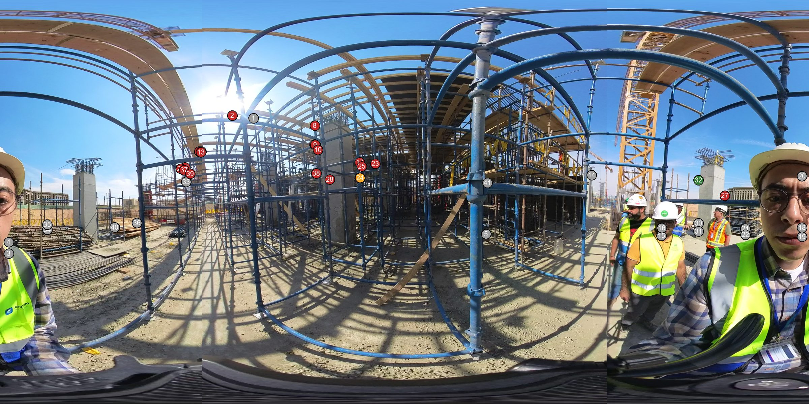
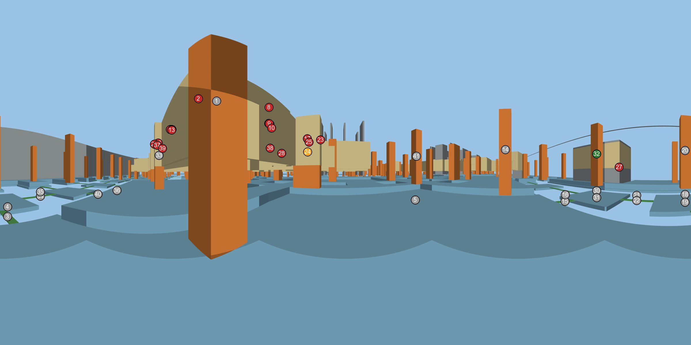
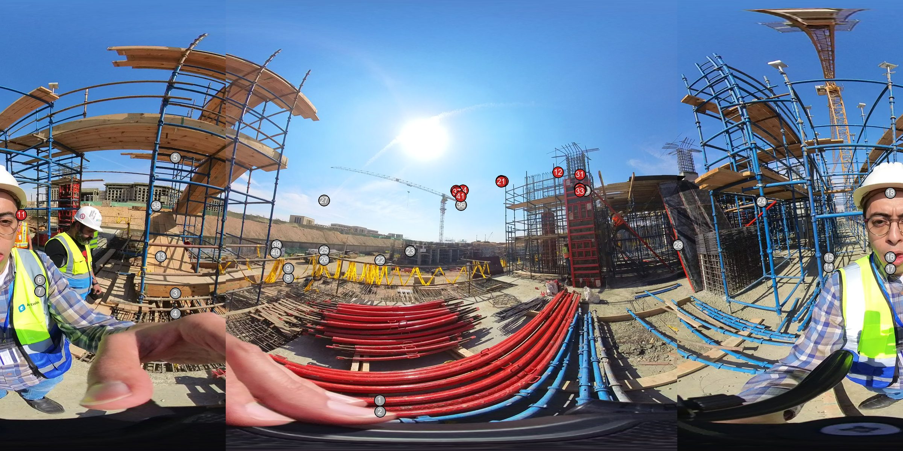
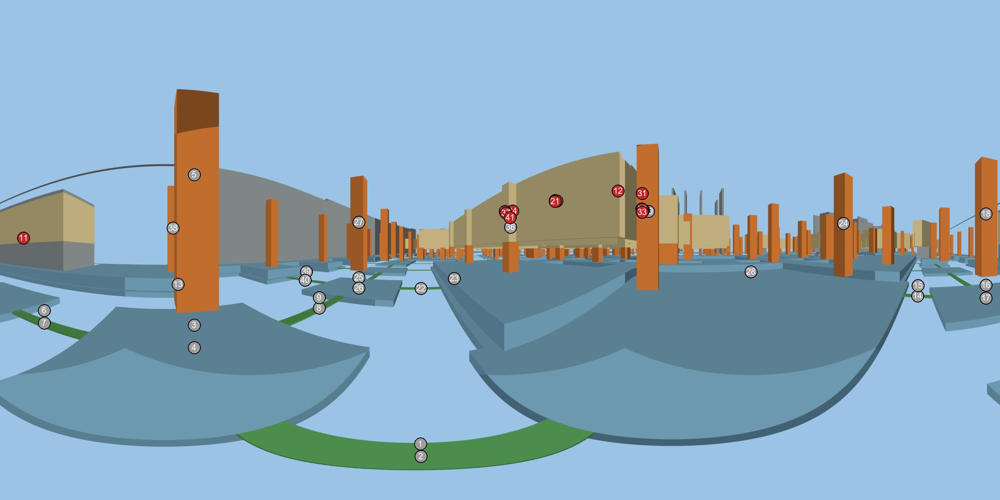

VID_20261031_122934_022 / t00000s
AI-estimated position (low confidence): an element may be one bay (about 6-8 m) off its marker. Markers are numbered; the table uses the same numbers.


| # | Element | Class | Discipline | Storey | Grid area | GUID | Dist. m | Status | Note | Also seen in |
|---|---|---|---|---|---|---|---|---|---|---|
| 2 | RC_Rectangular Columns:C(200x200)mm:3125309 | IfcColumn | architecture | HAC-FFL-B2 | S/20 | 2Q5eQr1CD8yATXepiUbK$S | 3.3 | not started | architectural or slab-on-grade level: nothing built above the raft in this 360 | clip 020 t=66s clip 021 t=0s clip 021 t=28s clip 021 t=58s clip 022 t=30s |
| 6 | Basic Wall:ABS-ARCH-WALL-Paint with plaster_PT-01:4777393 | IfcWall | architecture | HAC-FFL-B2 | 20/S | 0nYwlIw3vEBBi4_7qmvtc2 | 5.4 | not started | architectural or slab-on-grade level: nothing built above the raft in this 360 | clip 019 t=38s clip 020 t=0s clip 020 t=66s clip 021 t=0s clip 021 t=28s clip 021 t=58s clip 022 t=30s |
| 7 | RC_Rectangular Columns:C(200x200)mm:3061790 | IfcColumn | architecture | HAC-FFL-B2 | 20/S | 01QBEi_Pb3_hyTt4pIJEPf | 5.5 | not started | architectural or slab-on-grade level: nothing built above the raft in this 360 | clip 019 t=38s clip 020 t=0s clip 020 t=66s clip 021 t=0s clip 021 t=28s clip 021 t=58s clip 022 t=30s |
| 8 | M_Concrete-Rectangular Beam lintel :Bond Beam 200*400 mm:3156972 | IfcBeam | architecture | HAC-FFL-U2B2 | 20/S | 2_MuvtsaLDhOKpmRWrjGxm | 5.6 | not started | architectural or slab-on-grade level: nothing built above the raft in this 360 | clip 019 t=38s clip 020 t=0s clip 020 t=66s clip 021 t=0s clip 021 t=28s clip 021 t=58s clip 022 t=30s |
| 9 | Basic Wall:HAC_A_WALL_BW_W02_200mm:1727533 | IfcWall | architecture | HAC-FFL-B2 | 20/S | 0Y5ylc7Ln1jOaKGTZDhH1i | 5.6 | not started | architectural or slab-on-grade level: nothing built above the raft in this 360 | clip 019 t=38s clip 020 t=0s clip 020 t=66s clip 021 t=0s clip 021 t=28s clip 021 t=58s clip 022 t=30s |
| 10 | Basic Wall:ABS-ARCH-WALL-Paint with plaster_PT-01:3518530 | IfcWall | architecture | HAC-FFL-B2 | 20/D | 1OamUyK_P7987z59NRCNdj | 6.0 | not started | architectural or slab-on-grade level: nothing built above the raft in this 360 | clip 019 t=38s clip 020 t=0s clip 020 t=66s clip 021 t=0s clip 021 t=28s clip 021 t=58s clip 022 t=30s |
| 11 | Basic Wall:ABS-ARCH-WALL-Paint with plaster_PT-01:4777484 | IfcWall | architecture | HAC-FFL-B2 | C/AFX.A-19 | 0nYwlIw3vEBBi4_7qmvte$ | 6.4 | not started | architectural or slab-on-grade level: nothing built above the raft in this 360 | clip 021 t=58s clip 022 t=30s |
| 12 | Basic Wall:HAC_A_WALL_BW_W02_200mm:1727428 | IfcWall | architecture | HAC-FFL-B2 | C/AFX.A-19 | 0Y5ylc7Ln1jOaKGTZDhHU5 | 6.4 | not started | architectural or slab-on-grade level: nothing built above the raft in this 360 | clip 021 t=58s clip 022 t=30s |
| 13 | RC_Rectangular Columns:C(200x200)mm:3061484 | IfcColumn | architecture | HAC-FFL-B2 | C/AFX.A-19 | 01QBEi_Pb3_hyTt4pIJEYR | 6.5 | not started | architectural or slab-on-grade level: nothing built above the raft in this 360 | clip 021 t=58s clip 022 t=30s |
| 17 | Basic Wall:ABS-ARCH-WALL-Paint with plaster_PT-01:4779000 | IfcWall | architecture | HAC-FFL-B2 | D/20 | 0nYwlIw3vEBBi4_7qmvtVB | 8.3 | not started | architectural or slab-on-grade level: nothing built above the raft in this 360 | clip 019 t=38s clip 020 t=0s clip 020 t=66s clip 021 t=0s clip 021 t=28s clip 021 t=58s |
| 23 | Basic Wall:ABS-ARCH-WALL-Paint with plaster_PT-01:4778930 | IfcWall | architecture | HAC-FFL-B2 | AFX.A-G/AFX.A-18 | 0nYwlIw3vEBBi4_7qmvtU1 | 8.6 | not started | architectural or slab-on-grade level: nothing built above the raft in this 360 | clip 019 t=38s clip 020 t=0s clip 020 t=66s clip 021 t=0s clip 021 t=28s clip 021 t=58s |
| 24 | RC_Rectangular Columns:C(1000x2100)mm:618536 | IfcColumn | structure | HAC-SSL-FL2 | AFX.A-G/20 | 2Ip7HNHkH8QuUSM6MpN1VK | 8.8 | in progress | cast column with starter bars; identification vs other views uncertain, taken as in progress | clip 019 t=38s clip 020 t=0s clip 020 t=66s clip 021 t=58s |
| 25 | Basic Wall:ABS-ARCH-WALL-Paint with plaster_PT-01:4778868 | IfcWall | architecture | HAC-FFL-B2 | AFX.A-G/20 | 0nYwlIw3vEBBi4_7qmvtT7 | 9.3 | not started | architectural or slab-on-grade level: nothing built above the raft in this 360 | clip 019 t=38s clip 020 t=0s clip 020 t=66s clip 021 t=0s clip 021 t=28s clip 021 t=58s |
| 26 | Basic Wall:ABS-ARCH-WALL-Paint with plaster_PT-01:4777526 | IfcWall | architecture | HAC-FFL-B2 | AFX.A-19/C | 0nYwlIw3vEBBi4_7qmvte5 | 9.7 | not started | architectural or slab-on-grade level: nothing built above the raft in this 360 | clip 021 t=58s clip 022 t=30s |
| 27 | Floor:150 mm THK.:1468085 | IfcSlab | structure | HAC-SSL-SG | B/AFX.A-17 | 2aiUILnHv4$h0UpsR0ycX5 | 9.8 | not started | architectural or slab-on-grade level: nothing built above the raft in this 360 | clip 021 t=58s clip 022 t=30s |
| 28 | HAC_AAR_DOR_METL_MD03:MD03 (2000X2200)mm:1965432 | IfcDoor | architecture | HAC-FFL-B2 | AFX.A-G/20 | 2eXGO8_nDBneVywKcBRI1N | 10.0 | not started | architectural or slab-on-grade level: nothing built above the raft in this 360 | clip 020 t=66s clip 021 t=0s clip 021 t=28s clip 021 t=58s |
| 29 | Basic Wall:ABS-ARCH-WALL-Paint with plaster_PT-01:4777558 | IfcWall | architecture | HAC-FFL-B2 | 21/C | 0nYwlIw3vEBBi4_7qmvtfb | 10.1 | not started | architectural or slab-on-grade level: nothing built above the raft in this 360 | clip 021 t=58s clip 022 t=30s |
| 32 | RC_Rectangular Columns:C(800x800)mm:615910 | IfcColumn | structure | HAC-SSL-FL2 | B/AFX.A-17 | 3061ju5N94YvDiTWXiyN8N | 10.1 | complete | grey cast column standing up to the slab-formwork deck above | P08 P09 P10 clip 023 t=0s clip 023 t=4s |
| 37 | Basic Wall:ABS-ARCH-WALL-Paint with plaster_PT-01:4777611 | IfcWall | architecture | HAC-FFL-B2 | 21/C | 0nYwlIw3vEBBi4_7qmvtgu | 10.5 | not started | architectural or slab-on-grade level: nothing built above the raft in this 360 | clip 021 t=58s clip 022 t=30s |
| 38 | Basic Wall:ABS-ARCH-WALL-Paint with plaster_PT-01:3518480 | IfcWall | architecture | HAC-FFL-B2 | AFX.A-G/20 | 1OamUyK_P7987z59NRCNc$ | 10.7 | not started | architectural or slab-on-grade level: nothing built above the raft in this 360 | clip 020 t=66s clip 021 t=0s clip 021 t=28s clip 021 t=58s |
| 39 | Basic Wall:ABS-ARCH-WALL-Paint with plaster_PT-01:3518695 | IfcWall | architecture | HAC-FFL-B2 | 21/C | 1OamUyK_P7987z59NRCNb8 | 10.8 | not started | architectural or slab-on-grade level: nothing built above the raft in this 360 | clip 021 t=58s clip 022 t=30s |
Not visible from here (20)
- 1. IfcColumn · RC_Rectangular Columns:C(800x800)mm:618777 · 2Ip7HNHkH8QuUSM6MpN1Rb
- 3. IfcBeam · RC_Rectangular Beams:PC 50mm:996778 · 2VG9KaZu15AgEfkEGgH3_0
- 4. IfcBeam · RC_Rectangular Beams:GB(300X1000):646662 · 34M8DLIf5DehrtLoKQzA8l
- 5. IfcSlab · Foundation Slab:1700mm THK Tower Cranes:2948222 · 22J8uFbRj46P9YxwF6X6i_
- 14. IfcColumn · RC_Rectangular Columns:C(800x800)mm:618683 · 2Ip7HNHkH8QuUSM6MpN1T7
- 15. IfcBeam · RC_Rectangular Beams:PC 50mm:996777 · 2VG9KaZu15AgEfkEGgH3_3
- 16. IfcBeam · RC_Rectangular Beams:GB(300X1000):646627 · 34M8DLIf5DehrtLoKQzA7A
- 18. IfcSlab · RC_Rectangular Footings:F05:602996 · 3ERnecAkP14hz4_JSu2UQu
- 19. IfcSlab · PC_Rectangular Footings:F05:576400 · 1zYNzWgODBL9V9cdOOWbsV
- 20. IfcColumn · RC_Rectangular Columns:C(800x800)mm:615895 · 3061ju5N94YvDiTWXiyN8c
- 21. IfcBeam · RC_Rectangular Beams:GB(300X800):646047 · 34M8DLIf5DehrtLoKQzAUs
- 22. IfcBeam · RC_Rectangular Beams:PC 50mm:995571 · 2VG9KaZu15AgEfkEGgH3hP
- 30. IfcSlab · RC_Rectangular Footings:F05:602994 · 3ERnecAkP14hz4_JSu2UQ_
- 31. IfcSlab · PC_Rectangular Footings:F05:576380 · 1zYNzWgODBL9V9cdOOWbrp
- 33. IfcColumn · RC_Rectangular Columns:C(800x800)mm:618821 · 2Ip7HNHkH8QuUSM6MpN1Qv
- 34. IfcBeam · RC_Rectangular Beams:PC 50mm:1091572 · 17a3okn8b7VQEMq0ACB4Mw
- 35. IfcBeam · RC_Rectangular Beams:GB(300X800):1091409 · 17a3okn8b7VQEMq0ACB4KV
- 36. IfcBeam · RC_Rectangular Beams:GB(300X1000):646704 · 34M8DLIf5DehrtLoKQzA8P
- 40. IfcBeam · RC_Rectangular Beams:PC 50mm:996779 · 2VG9KaZu15AgEfkEGgH3_1
- 41. IfcColumn · RC_Rectangular Columns:C(800x800)mm:618426 · 2Ip7HNHkH8QuUSM6MpN0X6
Same spot elsewhere: clip 021 t=58s (1.4 m) clip 022 t=30s (5.1 m)
Final comment. A grey cast column stands up to the slab-formwork deck above (complete) and a second cast column with starter bars is taken as in progress. Structure shown as not started is the slab-on-grade level above the raft.
VID_20261031_122934_022 / t00030s
AI-estimated position (low confidence): an element may be one bay (about 6-8 m) off its marker. Markers are numbered; the table uses the same numbers.


| # | Element | Class | Discipline | Storey | Grid area | GUID | Dist. m | Status | Note | Also seen in |
|---|---|---|---|---|---|---|---|---|---|---|
| 11 | Floor:150 mm THK.:1468085 | IfcSlab | structure | HAC-SSL-SG | B/AFX.A-17 | 2aiUILnHv4$h0UpsR0ycX5 | 6.3 | not started | architectural or slab-on-grade level: nothing built above the raft in this 360 | clip 021 t=58s clip 022 t=0s |
| 12 | RC_Rectangular Columns:C(200x200)mm:3125309 | IfcColumn | architecture | HAC-FFL-B2 | S/20 | 2Q5eQr1CD8yATXepiUbK$S | 6.8 | not started | architectural or slab-on-grade level: nothing built above the raft in this 360 | clip 020 t=66s clip 021 t=0s clip 021 t=28s clip 021 t=58s clip 022 t=0s |
| 19 | Basic Wall:ABS-ARCH-WALL-Paint with plaster_PT-01:4777484 | IfcWall | architecture | HAC-FFL-B2 | C/AFX.A-19 | 0nYwlIw3vEBBi4_7qmvte$ | 8.3 | not started | architectural or slab-on-grade level: nothing built above the raft in this 360 | clip 021 t=58s clip 022 t=0s |
| 20 | Basic Wall:HAC_A_WALL_BW_W02_200mm:1727428 | IfcWall | architecture | HAC-FFL-B2 | C/AFX.A-19 | 0Y5ylc7Ln1jOaKGTZDhHU5 | 8.4 | not started | architectural or slab-on-grade level: nothing built above the raft in this 360 | clip 021 t=58s clip 022 t=0s |
| 21 | RC_Rectangular Columns:C(200x200)mm:3061484 | IfcColumn | architecture | HAC-FFL-B2 | C/AFX.A-19 | 01QBEi_Pb3_hyTt4pIJEYR | 8.4 | not started | architectural or slab-on-grade level: nothing built above the raft in this 360 | clip 021 t=58s clip 022 t=0s |
| 29 | Basic Wall:ABS-ARCH-WALL-Paint with plaster_PT-01:4777393 | IfcWall | architecture | HAC-FFL-B2 | 20/S | 0nYwlIw3vEBBi4_7qmvtc2 | 10.0 | not started | architectural or slab-on-grade level: nothing built above the raft in this 360 | clip 019 t=38s clip 020 t=0s clip 020 t=66s clip 021 t=0s clip 021 t=28s clip 021 t=58s clip 022 t=0s |
| 30 | RC_Rectangular Columns:C(200x200)mm:3061790 | IfcColumn | architecture | HAC-FFL-B2 | 20/S | 01QBEi_Pb3_hyTt4pIJEPf | 10.1 | not started | architectural or slab-on-grade level: nothing built above the raft in this 360 | clip 019 t=38s clip 020 t=0s clip 020 t=66s clip 021 t=0s clip 021 t=28s clip 021 t=58s clip 022 t=0s |
| 31 | M_Concrete-Rectangular Beam lintel :Bond Beam 200*400 mm:3156972 | IfcBeam | architecture | HAC-FFL-U2B2 | 20/S | 2_MuvtsaLDhOKpmRWrjGxm | 10.1 | not started | architectural or slab-on-grade level: nothing built above the raft in this 360 | clip 019 t=38s clip 020 t=0s clip 020 t=66s clip 021 t=0s clip 021 t=28s clip 021 t=58s clip 022 t=0s |
| 32 | Basic Wall:HAC_A_WALL_BW_W02_200mm:1727533 | IfcWall | architecture | HAC-FFL-B2 | 20/S | 0Y5ylc7Ln1jOaKGTZDhH1i | 10.1 | not started | architectural or slab-on-grade level: nothing built above the raft in this 360 | clip 019 t=38s clip 020 t=0s clip 020 t=66s clip 021 t=0s clip 021 t=28s clip 021 t=58s clip 022 t=0s |
| 33 | Basic Wall:ABS-ARCH-WALL-Paint with plaster_PT-01:3518530 | IfcWall | architecture | HAC-FFL-B2 | 20/D | 1OamUyK_P7987z59NRCNdj | 10.5 | not started | architectural or slab-on-grade level: nothing built above the raft in this 360 | clip 019 t=38s clip 020 t=0s clip 020 t=66s clip 021 t=0s clip 021 t=28s clip 021 t=58s clip 022 t=0s |
| 34 | Basic Wall:ABS-ARCH-WALL-Paint with plaster_PT-01:4777526 | IfcWall | architecture | HAC-FFL-B2 | AFX.A-19/C | 0nYwlIw3vEBBi4_7qmvte5 | 10.6 | not started | architectural or slab-on-grade level: nothing built above the raft in this 360 | clip 021 t=58s clip 022 t=0s |
| 35 | Basic Wall:ABS-ARCH-WALL-Paint with plaster_PT-01:4777558 | IfcWall | architecture | HAC-FFL-B2 | 21/C | 0nYwlIw3vEBBi4_7qmvtfb | 10.7 | not started | architectural or slab-on-grade level: nothing built above the raft in this 360 | clip 021 t=58s clip 022 t=0s |
| 37 | Basic Wall:ABS-ARCH-WALL-Paint with plaster_PT-01:4777611 | IfcWall | architecture | HAC-FFL-B2 | 21/C | 0nYwlIw3vEBBi4_7qmvtgu | 11.3 | not started | architectural or slab-on-grade level: nothing built above the raft in this 360 | clip 021 t=58s clip 022 t=0s |
| 41 | Basic Wall:ABS-ARCH-WALL-Paint with plaster_PT-01:3518695 | IfcWall | architecture | HAC-FFL-B2 | 21/C | 1OamUyK_P7987z59NRCNb8 | 11.7 | not started | architectural or slab-on-grade level: nothing built above the raft in this 360 | clip 021 t=58s clip 022 t=0s |
Not visible from here (27)
- 1. IfcBeam · RC_Rectangular Beams:GB(300X1000):646662 · 34M8DLIf5DehrtLoKQzA8l
- 2. IfcBeam · RC_Rectangular Beams:PC 50mm:996778 · 2VG9KaZu15AgEfkEGgH3_0
- 3. IfcSlab · RC_Rectangular Footings:F05:602996 · 3ERnecAkP14hz4_JSu2UQu
- 4. IfcSlab · PC_Rectangular Footings:F05:576400 · 1zYNzWgODBL9V9cdOOWbsV
- 5. IfcColumn · RC_Rectangular Columns:C(800x800)mm:615895 · 3061ju5N94YvDiTWXiyN8c
- 6. IfcBeam · RC_Rectangular Beams:GB(300X800):646047 · 34M8DLIf5DehrtLoKQzAUs
- 7. IfcBeam · RC_Rectangular Beams:PC 50mm:995571 · 2VG9KaZu15AgEfkEGgH3hP
- 8. IfcBeam · RC_Rectangular Beams:PC 50mm:1091572 · 17a3okn8b7VQEMq0ACB4Mw
- 9. IfcBeam · RC_Rectangular Beams:GB(300X800):1091409 · 17a3okn8b7VQEMq0ACB4KV
- 10. IfcColumn · RC_Rectangular Columns:C(800x800)mm:618777 · 2Ip7HNHkH8QuUSM6MpN1Rb
- 13. IfcBeam · RC_Rectangular Beams:GB1(400X1200):1760905 · 2zQYwNvbn53wx6OM6db0dj
- 14. IfcBeam · RC_Rectangular Beams:PC 50mm:996777 · 2VG9KaZu15AgEfkEGgH3_3
- 15. IfcBeam · RC_Rectangular Beams:GB(300X1000):646627 · 34M8DLIf5DehrtLoKQzA7A
- 16. IfcSlab · RC_Rectangular Footings:F05:602994 · 3ERnecAkP14hz4_JSu2UQ_
- 17. IfcSlab · PC_Rectangular Footings:F05:576380 · 1zYNzWgODBL9V9cdOOWbrp
- 18. IfcColumn · RC_Rectangular Columns:C(800x800)mm:615910 · 3061ju5N94YvDiTWXiyN8N
- 22. IfcBeam · RC_Rectangular Beams:PC 50mm:996779 · 2VG9KaZu15AgEfkEGgH3_1
- 23. IfcBeam · RC_Rectangular Beams:GB(300X1000):646704 · 34M8DLIf5DehrtLoKQzA8P
- 24. IfcColumn · RC_Rectangular Columns:C(800x800)mm:618683 · 2Ip7HNHkH8QuUSM6MpN1T7
- 25. IfcSlab · RC_Rectangular Footings:F05:602998 · 3ERnecAkP14hz4_JSu2UQw
- 26. IfcSlab · PC_Rectangular Footings:F05:576420 · 1zYNzWgODBL9V9cdOOWbsh
- 27. IfcColumn · RC_Rectangular Columns:C(800x800)mm:615850 · 3061ju5N94YvDiTWXiyN9R
- 28. IfcSlab · Foundation Slab:1700mm THK Tower Cranes:2948222 · 22J8uFbRj46P9YxwF6X6i_
- 36. IfcColumn · RC_Rectangular Columns:C(800x800)mm:618821 · 2Ip7HNHkH8QuUSM6MpN1Qv
- 38. IfcColumn · RC_Rectangular Columns:C(800x800)mm:608902 · 3EiCjDjFHBo9ianunvkuX7
- 39. IfcBeam · RC_Rectangular Beams:GB1(400X1200):646342 · 34M8DLIf5DehrtLoKQzA3l
- 40. IfcBeam · RC_Rectangular Beams:PC 50mm:995011 · 2VG9KaZu15AgEfkEGgH2Jf
Same spot elsewhere: clip 022 t=0s (5.1 m) clip 021 t=58s (6.3 m)
Final comment. Almost nothing could be matched to the model in this frame; only upper levels are marked, and nothing is built there. Structure shown as not started is the slab-on-grade level above the raft.